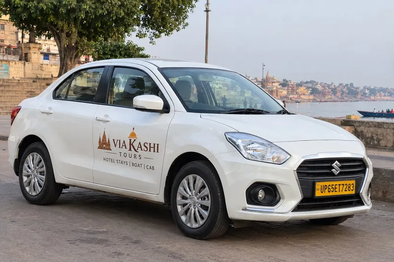
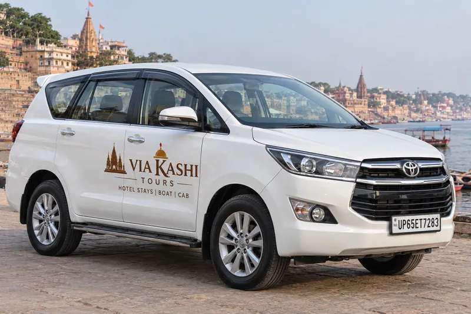
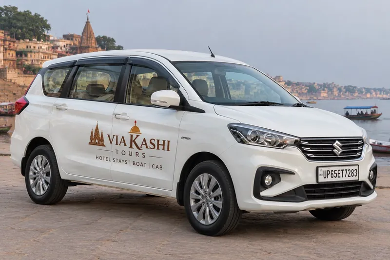
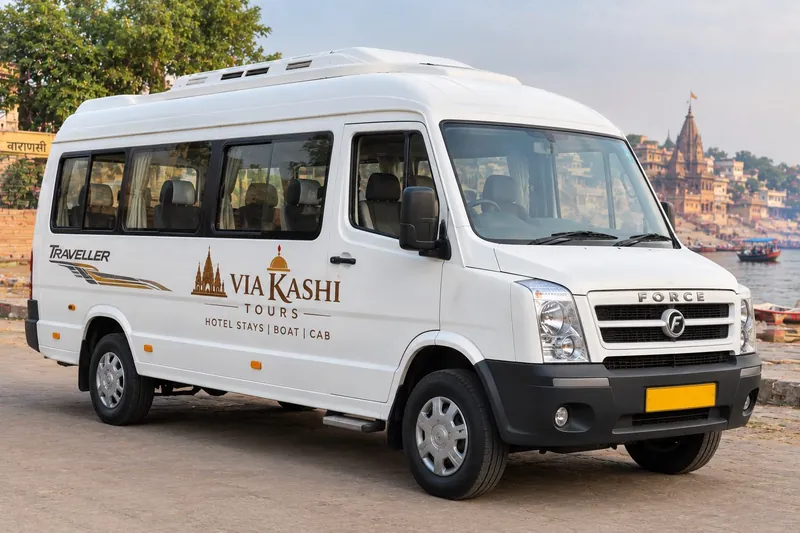

Cab Booking in Varanasi
Dzire, Innova Crysta, Ertiga and Tempo Traveller — airport transfers, local sightseeing and outstation trips.
Enquire on WhatsAppOur Cabs in Varanasi
Clean, white Via Kashi cabs with local drivers who know the city. Choose a vehicle that suits your group and tell us your route.

Dzire — comfortable sedan
A neat sedan for couples and small families, ideal for airport transfers and a day around the ghats and temples.
- Airport pickup and drop
- Local sightseeing in Varanasi
- Day trips to Sarnath and nearby cities

Innova Crysta — roomy and premium
A spacious people carrier for families who want extra room for luggage on longer pilgrimage routes.
- Comfortable for long drives
- Good luggage space
- Prayagraj, Ayodhya and Bodhgaya routes

Ertiga — family friendly
A practical vehicle for mid-sized families who want to travel together without paying for a premium car.
- Suits family trips
- Airport transfers and sightseeing
- Outstation routes on request

Tempo Traveller — for groups
A Tempo Traveller keeps larger families and groups together for sightseeing and pilgrimage tours.
- Ideal for groups and events
- Airport pickup for the whole group
- Multi-day tour packages
Popular Routes
Tell us the date and your group size and we will share options for any of these routes — or your own.